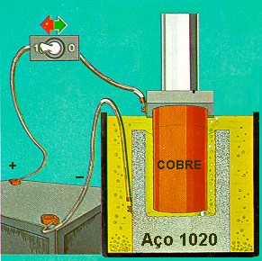
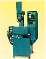

LMP>Research Guidelines>PROCESP>Sharp corner wear analysis of copper electrodes on electroerosion by spark
OBJECTIVESThe objective of this work is to study the sharp corner wear behavior of copper electrodes, under pre-set rough and finish machining conditions, on electroerosion by spark. PROCEDURESOn an electroerosion by penetration machine (model ENGEMAQ EDM 200), there
are made assays on SAE 1020 steel specimen, using electrode-tool of electrolytic
copper. The specimens are machined according to pre set input parameters (for
rough and finish machining).
The electrode sharp corner wear measurement is done indirectly, through cavity
bottom rounding measurement (figure). A characteristic of the electroerosion
process is the reproduction of the electrode shape on the part (the electrode
wear is transmitted to the part).  For each parameters group, the electrode wear verification and evaluation is periodically accomplished, as the electrode advances against the cavity, through a digital camera that transmits an image, with the desired increase, of the studied region, directly to a computer. The imaged is captured by an acquisition software, allowing it to be manipulated. RESULTSThere are traced behavior curves that relate the input parameters with the
cavities measured rounding radius progression. Those curves are used as referential
for sharp corner wear measurement.  |
| Contact: PROCESP Walter Lindolfo Weingaertner Prof. Dr.-Ing |
Last update 06.07.2006 |